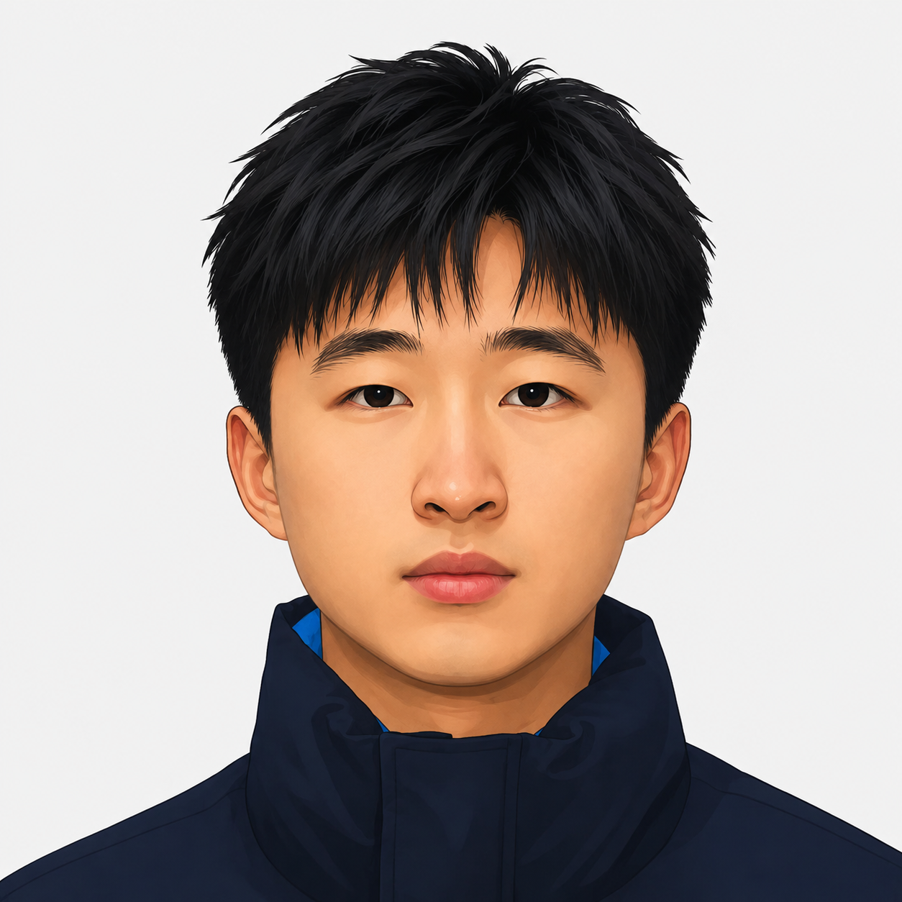

|
Suzhe Xu
I am a third-year undergraduate at Huaqiao University, majoring in Artificial Intelligence (overall rank 1/40, National Scholarship 2024).
Since June 2025, I have been a research intern at Peking University with Prof. He Sun and Prof. Wenzheng Chen.
I am also an Algorithm Research Intern at Kuaishou Technology's Foundation Model Center (Jan 2026–present), contributing to the KAT-Coder agentic-LLM line.
My research focuses on amortized inference for video inverse problems: distilling powerful but slow video diffusion priors into one-step, causal solvers that run at streaming speeds. I am broadly interested in generative models, world models, and the systems-level design that makes diffusion-based reconstruction practical for real-time deployment.
I am applying for PhD programs starting Fall 2027.
Email /
CV /
Scholar /
GitHub
|

|
Research
I am interested in computer vision, diffusion models, and amortized variational inference for high-dimensional posteriors. Most of my recent work distills strong but slow video diffusion priors into fast causal solvers for streaming inverse problems—making real-time, diffusion-quality reconstruction possible.
|
|
|
InstantViR: Real-Time Video Inverse Problem Solver with Distilled Diffusion Prior
Weimin Bai*,
Suzhe Xu*,
Yiwei Ren,
Jinhua Hao,
Ming Sun,
Wenzheng Chen,
He Sun
CVPR, 2026 Highlight (top 3%)
arXiv
We distill a powerful bidirectional video diffusion teacher (Wan2.1) into a fast causal autoregressive student that maps degraded video directly to its restoration in a single forward pass, with no paired data and no iterative test-time optimization. A teacher-space regularized LeanVAE swap removes the latent-space bottleneck, yielding the first real-time (>35 FPS) diffusion-based solver for streaming inpainting, deblurring, and super-resolution—up to 100× faster than iterative video-diffusion baselines. (Hover the clip to see measurement → reconstruction; both clips stay frame-aligned.)
|
|
|
Bridging Distillation Gaps for Real-Time Video Inverse Problem Solvers
Suzhe Xu,
Weimin Bai,
Jinhua Hao,
Ming Sun,
Wenzheng Chen,
He Sun
Manuscript, targeting IEEE Transactions on Multimedia, 2026
Special Issue on Multimodal Video Compression and Reconstruction
A follow-up that diagnoses three structural mismatches in amortized video posterior distillation—causal information mismatch, cross-latent-space mismatch, and objective mismatch—and resolves each with one mechanism:
CAI (asymmetric 14B/1.3B causal initialization) prevents posterior-mean collapse;
BDC (Bridge Distillation across Compressed latent spaces) trains the student in a 4×-compressed Video DA-VAE space while routing teacher gradients through a training-time WanVAE bridge—full DMD supervision, zero inference overhead;
CLA (Cyclic Likelihood Annealing) tempers the posterior on a cosine schedule, recovering +4.5 dB PSNR over fixed-weight baselines.
Together they reach 33.5 FPS at 832×480 with state-of-the-art quality on inpainting, deblur, and 4× super-resolution. We also release a 346K-clip paired corpus.
|
|
|
KAT-Coder-V2 Technical Report
Fengxiang Li, ...,
Suzhe Xu, ...,
Ming Sun,
Lin Ye,
Bin Chen
Technical Report, Kuaishou Technology, 2026
arXiv
An agentic LLM following a “Specialize-then-Unify” paradigm that decomposes coding-agent capabilities into five expert domains. I contributed to MCLA for stabilizing MoE RL training and to Tree Training for trajectory optimization, together giving a 6.2× end-to-end speedup over the V1 training stack.
|
Miscellaneous
I speak Mandarin, English (IELTS 7.5), and intermediate French (CEFR B1, ongoing). Earlier in my undergrad I worked with Prof. Jialin Peng at Huaqiao University on multimodal medical image segmentation and SAM adaptation. I also led a CUMCM-winning team (provincial First Prize) and was an Outstanding Camper at the Datawhale · Alibaba Cloud Tianchi AI Summer Camp.
|
|
{kind=link}